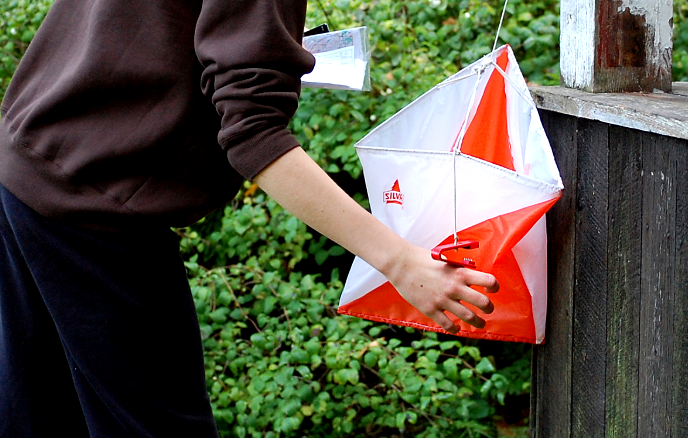

التوجيه كشكل من أشكال المنافسة
عند التوجيه، توجد أحيانًا نقاط تفتيش محددة على الخريطة. هذا يأتي من نوع التوجيه التنافسي، الذي يهدف إلى إيجاد عدد من الأماكن المحددة بأسرع وقت ممكن وبترتيب معين باستخدام الخريطة. هذه الأماكن مُعلّمة على الخريطة بدائرة بنفسجية ولها أرقام مختلفة. الموقع الذي يجب العثور عليه يكون دائمًا في وسط الدائرة، ويوصف في وصف نقاط التفتيش على الخريطة، مثل "الصخرة" أو "قاعدة المنحدر". بذلك تعلم أن نقطة التفتيش موجودة عند صخرة كبيرة أو أسفل منحدر.
هل تريد أن تبدأ في التوجيه؟ إذاً تواصل مع نادي التوجيه المحلي لديك. يمكنك العثور على أقرب نادٍ لك عبر موقع orientering.se.
العناصر الخمسة الأساسية للتوجيه
- فهم مكانك على الخريطة والمكان الذي تتجه إليه.
- تناسب الخريطة.
- اختر وخطط لمسارك.
- نفذ خطتك وتأكد من أنك على الطريق الصحيح.
- العثور على عنصر التحكم.